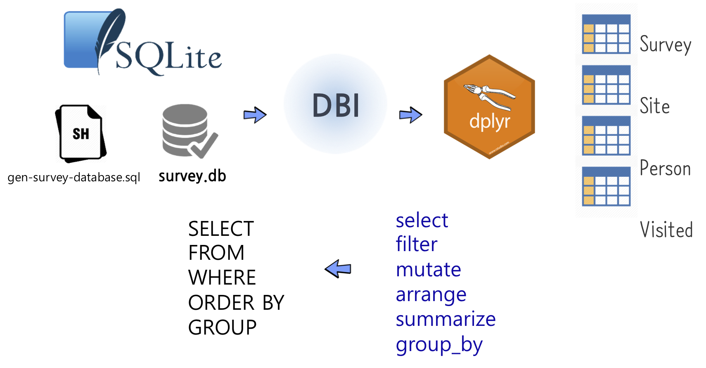

library(tidyverse)
library(duckdb)
crime_csv <- fs::dir_ls("data/crime/")
crime_raw <- crime_csv |>
enframe(value = "filepath") |>
select(-name) |>
mutate(data = map(filepath, read_csv)) |>
mutate(year = str_extract(filepath, "\\d{4}")) |>
select(year, data)
crime_tbl <- crime_raw |>
unnest(data) |>
janitor::clean_names()
crime_tbl |>
glimpse()
#> Rows: 707,153
#> Columns: 23
#> $ year <chr> "2021", "2021", "2021", "2021", "2021", "2021", "…
#> $ id <dbl> 12342615, 26262, 13209581, 13209369, 12374520, 13…
#> $ case_number <chr> "JE202211", "JE366265", "JG422927", "JG422777", "…
#> $ date <chr> "04/17/2021 03:20:00 PM", "09/08/2021 04:45:00 PM…
#> $ block <chr> "081XX S PRAIRIE AVE", "047XX W HARRISON ST", "01…
#> $ iucr <chr> "0325", "0110", "1563", "1153", "0486", "1153", "…
#> $ primary_type <chr> "ROBBERY", "HOMICIDE", "SEX OFFENSE", "DECEPTIVE …
#> $ description <chr> "VEHICULAR HIJACKING", "FIRST DEGREE MURDER", "CR…
#> $ location_description <chr> "RESIDENCE", "CAR WASH", "APARTMENT", "RESIDENCE"…
#> $ arrest <lgl> TRUE, TRUE, FALSE, FALSE, FALSE, FALSE, FALSE, FA…
#> $ domestic <lgl> FALSE, FALSE, FALSE, FALSE, TRUE, FALSE, FALSE, F…
#> $ beat <chr> "0631", "1131", "0411", "0915", "1123", "1412", "…
#> $ district <chr> "006", "011", "004", "009", "011", "014", "017", …
#> $ ward <dbl> 6, 24, 8, 11, 28, 35, 45, 25, 25, 20, 9, 44, 28, …
#> $ community_area <dbl> 44, 25, 45, 60, 27, 21, 16, 31, 31, 40, 73, 6, 28…
#> $ fbi_code <chr> "03", "01A", "17", "11", "08B", "11", "11", "17",…
#> $ x_coordinate <dbl> 1179448, 1144907, NA, NA, 1154131, NA, NA, NA, NA…
#> $ y_coordinate <dbl> 1851073, 1896933, NA, NA, 1900784, NA, NA, NA, NA…
#> $ year_2 <dbl> 2021, 2021, 2021, 2021, 2021, 2021, 2021, 2021, 2…
#> $ updated_on <chr> "09/14/2023 03:41:59 PM", "09/14/2023 03:41:59 PM…
#> $ latitude <dbl> 41.74663, 41.87319, NA, NA, 41.88358, NA, NA, NA,…
#> $ longitude <dbl> -87.61803, -87.74345, NA, NA, -87.70948, NA, NA, …
#> $ location <chr> "(41.746626309, -87.618031954)", "(41.873191445, …13 생산성 향상 전략
데이터베이스에 존재하는 데이터를 통해 다양한 분석 및 모형개발 작업을 수행할 때 생산성을 높일 수 있는 다양한 방법이 있다. 대표적으로 분석에 특화된 데이터베이스를 사용하는 것은 대용량 데이터를 빠르게 처리함으로써 기계시간(Machine time)을 줄여 생산성을 높이는 것이고 다른 한가지 방법은 SQL 쿼리를 직접 작성하지 않고 사람시간(Human time)을 줄여 생산성을 높일 수 있는 dplyr 데이터 문법을 활용하는 방법이 있다.
13.1 DuckDB
SQLite3와 DuckDB는 각각 OLTP(Online Transaction Processing)와 OLAP(Online Analytical Processing) 관점으로 살펴보면, SQLite3는 OLTP에 더 적합한 데이터베이스로, 애플리케이션 거래 처리(transaction)를 위한 운영 데이터 관리에 사용되고, 빠른 쓰기와 읽기, 낮은 지연 시간, 높은 트랜잭션 보장이 필요한 환경에 맞게 설계되었다. 특히, SQLite는 가벼운 구조와 서버리스 아키텍처로 인해 임베디드 시스템, 모바일 애플리케이션, 소규모 웹 애플리케이션에서 데이터를 저장하고 관리하는 데 자주 사용된다.
반면, DuckDB는 OLAP에 더 적합하며 데이터 분석 작업에 최적화된 데이터베이스로, 큰 규모 데이터셋에 대한 복잡한 쿼리와 데이터 분석을 빠르게 수행할 수 있다. DuckDB의 벡터화 쿼리 처리와 멀티 코어 시스템에서 병렬 처리 능력은 대용량 데이터 분석, 보고서 생성, 데이터 마이닝과 같은 작업에 탁월한 성능을 제공한다. DuckDB는 주로 데이터 과학자들과 분석가들이 사용하는 도구로써, 빅데이터의 효율적인 처리와 복잡한 분석 쿼리를 빠르게 실행시킬 수 있다.

DuckDB는 “SQLite for analytics”라는 슬로건으로 알려진, 분석을 위한 임베디드 관계형 SQL 데이터베이스 라이브러리다. DuckDB는 설치가 쉽고, 별도의 설정 없이 메모리 상에서 데이터를 처리하거나 단일 파일 데이터베이스로 데이터를 저장할 수 있다.
SQLite와는 달리 DuckDB는 컬럼 지향적인 테이블 데이터 모델을 사용한다. 이는 R과 같은 데이터 분석 언어의 데이터 모델과 유사하며, 대규모의 데이터를 빠르고 효율적으로 처리하는 데 유리하다.
DuckDB의 가장 인상적인 특징 중 하나는 R과 Python과의 통합이다. R 사용자는 install.packages("duckdb") 명령을 통해 쉽게 설치할 수 있으며, Python 사용자도 마찬가지로 쉽게 설치 및 사용이 가능하다. 이로 인해 데이터 분석가와 개발자 모두에게 매력적인 선택이 될 수 있다.
13.2 시카고 범죄 데이터
crime_tbl |>
count(primary_type, sort = TRUE) |>
head(10) |>
ggplot(aes(x = fct_reorder(primary_type, n), y = n)) +
geom_col() +
coord_flip() +
labs(x = "범죄 유형", y = "범죄 건수", title = "시카고 범죄 유형별 건수")
DuckDB는 Analytical SQLite라는 별명을 갖고 있다. SQLite가 OLTP 데이터베이스라면, DuckDB OLAP 데이터베이스라고 볼 수 있다.
con_dd <- duckdb::dbConnect(duckdb::duckdb())
duckdb::dbWriteTable(con_dd, "crime_tbl", crime_tbl, overwrite = TRUE)
duckdb::dbListTables(con_dd)
#> [1] "crime_tbl"
dbGetQuery(con_dd, "SELECT COUNT(*) AS '범죄수' FROM crime_tbl")
#> 범죄수
#> 1 707153time <- function(call) {
print(system.time(call())[[1]])
}
time(\() duckdb::dbWriteTable(con_dd, "crime_tbl", crime_tbl, overwrite = TRUE))
#> [1] 0.66
time(\() dbGetQuery(con_dd, "SELECT COUNT(*) AS '범죄수' FROM crime_tbl"))
#> [1] 0library(RSQLite)
con_sqlite <- dbConnect(RSQLite::SQLite())
time(\() RSQLite::dbWriteTable(con_sqlite, "crime_tbl", crime_tbl, overwrite = TRUE))
#> [1] 1.51crime_schema <- DBI::dbGetQuery(con_dd, 'SELECT * FROM duckdb_tables;')
crime_schema |>
select(sql)
#> sql
#> 1 CREATE TABLE crime_tbl("year" VARCHAR, id DOUBLE, case_number VARCHAR, date VARCHAR, block VARCHAR, iucr VARCHAR, primary_type VARCHAR, description VARCHAR, location_description VARCHAR, arrest BOOLEAN, domestic BOOLEAN, beat VARCHAR, district VARCHAR, ward DOUBLE, community_area DOUBLE, fbi_code VARCHAR, x_coordinate DOUBLE, y_coordinate DOUBLE, year_2 DOUBLE, updated_on VARCHAR, latitude DOUBLE, longitude DOUBLE, "location" VARCHAR);complex_query <- "
SELECT
primary_type,
ROUND(AVG(latitude), 5) AS avg_latitude,
ROUND(AVG(longitude), 5) AS avg_longitude,
SUM(CASE WHEN arrest THEN 1 ELSE 0 END) AS total_arrests,
COUNT(*) AS total_crimes,
year
FROM
crime_tbl
WHERE
year >= '2021' AND year <= '2023'
GROUP BY
primary_type, year
HAVING
COUNT(*) > 100
ORDER BY
total_crimes DESC, primary_type
LIMIT 5;
"
dbGetQuery(con_dd, complex_query)
#> primary_type avg_latitude avg_longitude total_arrests total_crimes year
#> 1 THEFT 41.86707 -87.66762 2738 56770 2023
#> 2 THEFT 41.86597 -87.66691 2019 54853 2022
#> 3 BATTERY 41.83902 -87.66873 6726 43958 2023
#> 4 BATTERY 41.83833 -87.66838 5932 40924 2022
#> 5 THEFT 41.86354 -87.66865 1552 40806 2021작성된 SQL 쿼리는 시카고 범죄 데이터베이스에서 2021년부터 2023년까지 가장 흔한 범죄 유형 상위 5가지를 찾고, 이들의 평균 발생 위치, 체포 건수, 연도별 발생 횟수를 파악하는 것이다.
WHERE절: 범죄 발생 연도를 2021년부터 2023년 사이로 범위를 제한한다.GROUP BY절: 결과를 범죄 유형(primary_type)과 발생 연도(year)별로 그룹화한다.ROUND(AVG(latitude), 5)및ROUND(AVG(longitude), 5): 각 범죄 유형의 평균 위도와 경도를 계산하여 범죄가 일반적으로 발생하는 위치를 파악한다. 평균은 소수점 다섯째 자리까지 반올림된다.SUM(CASE WHEN arrest THEN 1 ELSE 0 END) AS total_arrests: 각 범죄 유형별로 발생한 총 체포 건수를 합산하고,arrest가 참일 때마다 1을 더하는 방식으로 계산한다.COUNT(*) AS total_crimes: 각 범죄 유형별로 발생한 총 범죄 건수를 계산한다.HAVING COUNT(*) > 100: 100건 이상 발생한 범죄 유형만을 필터링하여 신뢰성 있는 데이터만을 대상으로 한다.ORDER BY total_crimes DESC, primary_type: 총 범죄 건수가 많은 순으로 결과를 정렬하고, 동일한 건수일 경우 범죄 유형(primary_type)에 따라 정렬한다.LIMIT 5: 결과를 상위 5가지 범죄 유형으로 한정한다.
time(\() dbGetQuery(con_dd, complex_query) )
#> [1] 0.19
time(\() dbGetQuery(con_sqlite, complex_query) )
#> [1] 0.5613.3 dplyr 동사로 데이터베이스 작업
13.3.1 데이터베이스 연결
가장 먼저 앞에서 생성한 sqlite3 데이터베이스에 R과 연결시킨다. 그리고 연결된 데이터베이스에 들어있는 테이블을 살펴본다.
# 0. 환경설정 -----------------------
library(dbplyr)
library(tidyverse)
library(DBI)
# 1. 데이터 연결 -----------------------
survey_con <- DBI::dbConnect(RSQLite::SQLite(), "data/survey.db")
dbListTables(survey_con)
#> [1] "Person" "Site" "Survey" "Visited"13.3.2 SQL을 직접 던지기
dbGetQuery 명령어를 통해 연결된 con을 통해 데이터베이스에 질의문(query)를 직접 던질 수 있다.
# 2. SQL 활용 -----------------------
dbGetQuery(survey_con, 'SELECT * FROM Person LIMIT 5')
#> id personal family
#> 1 dyer William Dyer
#> 2 pb Frank Pabodie
#> 3 lake Anderson Lake
#> 4 roe Valentina Roerich
#> 5 danforth Frank Danforth13.3.3 dplyr 동사 활용
tbl 함수로 con 으로 연결된 데이터베이스의 특정 테이블 “Survey”를 뽑아낸다.
# 3. dplyr 방식 -----------------------
survey_df <- tbl(survey_con, "Survey")
head(survey_df)
#> # Source: SQL [6 x 4]
#> # Database: sqlite 3.41.2 [D:\tcs\gpt-sql\data\survey.db]
#> taken person quant reading
#> <int> <chr> <chr> <dbl>
#> 1 619 dyer rad 9.82
#> 2 619 dyer sal 0.13
#> 3 622 dyer rad 7.8
#> 4 622 dyer sal 0.09
#> 5 734 pb rad 8.41
#> 6 734 lake sal 0.0513.3.4 데이터프레임 변환
tbl 함수로 con 으로 연결된 데이터베이스의 특정 테이블 “Survey”를 뽑아낸 상태는 아직 R에서 작업이 가능한 데이터프레임이 아니라 collect 함수를 활용해서 데이터프레임으로 변환시켜 후속 작업을 R에서 실행한다.
# 4. 데이터프레임 변환 -----------------------
survey_df %>% collect() %>%
ggplot(aes(x= quant, y=reading)) +
geom_boxplot()13.3.5 SQL 변환 과정 살펴보기
show_query 함수를 사용해서 dplyr 동사가 SQL 질의문으로 변환된 상황을 살펴볼 수도 있다.
# 5. 내부 SQL 변환과정 살펴보기 --------------
survey_df |>
filter(quant == "sal") |>
show_query()
#> <SQL>
#> SELECT *
#> FROM `Survey`
#> WHERE (`quant` = 'sal')13.3.6 데이터베이스 연결 끊기
데이터베이스는 혼자 사용하는 것이 아니라 사용하지 않는 경우 필히 연결시켜 놓은 con을 반듯이 끊어 놓는다.
# 7. 연결 끊기 -----------------------
dbDisconnect(survey_con)13.4 R에서 바라본 SQL
NoSQL과 빅데이터가 주목을 받고 있지만, 데이터 분석을 하는 입장에서는 여전히 SQL의 중요성이 크다. SQL에 대한 이해는 데이터 조작의 기본을 다지는 데 필수적이며, 이를 바탕으로 DBI 패키지를 사용해 dplyr과 연결하여 활용하는 방법을 살펴볼 수 있다.

R 개발자들은 데이터 분석을 할 때 dplyr을 사용하고, 데이터베이스 작업을 할 때는 SQL을 사용하는 것이 일반적인 작업 흐름이었다. 이렇게 두 가지 다른 도구를 사용하는 것은 동일한 작업을 중복해서 수행한다는 불편함을 가져왔다. 그러나 dplyr을 다양한 데이터베이스 시스템에 DBI와 odbc와 연결하면 문제를 해결할 수 있다. 즉, dplyr 동사를 직접 사용하여 SQL 작업을 수행할 수 있어 dplyr 동사를 데이터베이스에 직접 던져서 작업을 수행할 수 있는 중간 통역이 제공되어 보다 효율적으로 작업을 진행할 수 있게 된다.
13.4.1 SQL 자료처리
자료를 원하는 방향으로 처리하기 위해서는 다음과 같은 다양한 기본적인 자료 처리 방법을 조합하여 사용한다.
- 데이터 선택하기
- 정렬과 중복 제거하기
- 필터링(filtering)
- 새로운 값 계산하기
- 결측 데이터 (Missing Data)
- 집합 (Aggregation)
- 데이터 조합하기 (Combining Data)
# 칼럼과 행 선택
SELECT 칼럼명1, 칼럼명2....칼럼명N
FROM 테이블명
WHERE 조건;
# 그룹에 따른 정렬 및 총계(aggregation)
SELECT SUM(칼럼명)
FROM 테이블명
WHERE 조건
ORDER BY 칼럼명 {오름차순|내림차순};
GROUP BY 칼럼명;13.4.2 SQLite와 실습 데이터베이스
먼저 이론을 이해하는 것과 더블어 예제 데이터베이스를 설치하고 실습을 진행하기 위해서 먼저 명령-라인을 사용하여 어떻게 디렉토리 여기저기 이동하는지와 명령-라인에서 명령문을 어떻게 실행하는지 숙지할 필요가 있다.
이런 주제와 친숙하지 않다면, 유닉스 쉘(Unix Shell) 학습을 참조한다. 우선, SQLite 데이터베이스가 어떻게 동작하는지 설명을 할 필요가 있다.
인터랙티브하게 학습을 수행하기 위해서는 설치 방법에 언급된 SQLite 를 참조하여 설치하고, 학습자가 선택한 위치에 “software_carpentry_sql” 디렉토리를 생성한다. 예를 들어,
- 명령-라인 터미널 윈도우를 연다.
- 다음과 같이 명령어를 타이핑해서 디렉토리를 생성한다.
$ mkdir ~/swc/sql- 생성한 디렉토리로 현재 작업 디렉토리를 변경한다.
$ cd ~/swc/sql13.5 SQLite 설치 1
느긋한 계산법
데이터베이스를 다룰 때, dplyr은 가능한 느긋(laziness)하게 동작한다.
- 명시적으로 요청하지 않는 한, 데이터를 R 환경으로 바로 가져오지 않는다.
- 가능한 마지막 순간까지 작업을 지연시킨다 - 작업하고 싶은 모든 것을 모아 한 단계로 데이터베이스로 보낸다.
13.6 SQLite DB 연결/설치 테스트
생성된 데이터베이스에 연결하기 위해서, 데이터베이스를 생성한 디렉토리 안에서 SQLite를 시작한다. 그래서 ~/swc/sql 디렉토리에서 다음과 같이 타이핑한다.
root@hangul:~/swc/sql$ sqlite3 survey.dbsqlite3 survey.db 명령문이 데이터베이스를 열고 데이터베이스 명령-라인 프롬프트로 안내한다. SQLite에서 데이터베이스는 플랫 파일(flat file)로 명시적으로 열 필요가 있다. 그리고 나서 SQLite 시작되고 sqlite로 명령-라인 프롬프트가 다음과 같이 변경되어 표시된다.
SQLite version 3.20.0 2017-08-01 13:24:15
Enter ".help" for usage hints.
Connected to a transient in-memory database.
Use ".open FILENAME" to reopen on a persistent database.
sqlite> 다음 출력결과가 보여주듯이 .databases 명령문으로 소속된 데이터베이스 이름과 파일 목록을 확인한다.
sqlite> .databases
seq name file
--- --------------- ----------------------------------------------------------
0 main ~/novice/sql/survey.db다음과 같이 타이핑해서 필요한 “Person”, “Survey”, “Site” “Visited” 테이블이 존재하는 것을 확인한다. .table의 출력결과는 다음과 같다.
sqlite> .tables
Person Site Survey Visited13.7 SQL 대신 dplyr
(Lewis 2021)
출발지 공항별로 상위 3개 목적지 이름을 출력결과를 작성해보자.
13.7.1 SQL 쿼리
library(duckdb)
data("flights", package = "nycflights13")
flight_con <- dbConnect(duckdb())
duckdb_register(flight_con, "flights", flights)
dbGetQuery(flight_con,
"SELECT origin, dest
FROM (SELECT origin, dest, n
FROM (SELECT origin, dest, n, RANK() OVER (
PARTITION BY origin ORDER BY n DESC) AS h
FROM (SELECT origin, dest, COUNT(*) AS n
FROM flights
GROUP BY origin, dest
) AS curly
) AS moe
WHERE (h <= 3)
) AS shemp ORDER BY origin;")
#> origin dest
#> 1 EWR ORD
#> 2 EWR BOS
#> 3 EWR SFO
#> 4 JFK LAX
#> 5 JFK SFO
#> 6 JFK BOS
#> 7 LGA ATL
#> 8 LGA ORD
#> 9 LGA CLT
dbDisconnect(flight_con, shutdown=TRUE) 13.7.2 dplyr 문법
flights |>
group_by(origin) |>
count(dest, sort = TRUE) |>
slice_head(n = 3) |>
select(origin, dest)
#> # A tibble: 9 × 2
#> # Groups: origin [3]
#> origin dest
#> <chr> <chr>
#> 1 EWR ORD
#> 2 EWR BOS
#> 3 EWR SFO
#> 4 JFK LAX
#> 5 JFK SFO
#> 6 JFK BOS
#> 7 LGA ATL
#> 8 LGA ORD
#> 9 LGA CLT13.7.3 Base R 문법
Map(function(x) head(names(sort(table(x), decreasing = TRUE)), 3),
split(flights[["dest"]], flights[["origin"]]))
#> $EWR
#> [1] "ORD" "BOS" "SFO"
#>
#> $JFK
#> [1] "LAX" "SFO" "BOS"
#>
#> $LGA
#> [1] "ATL" "ORD" "CLT"